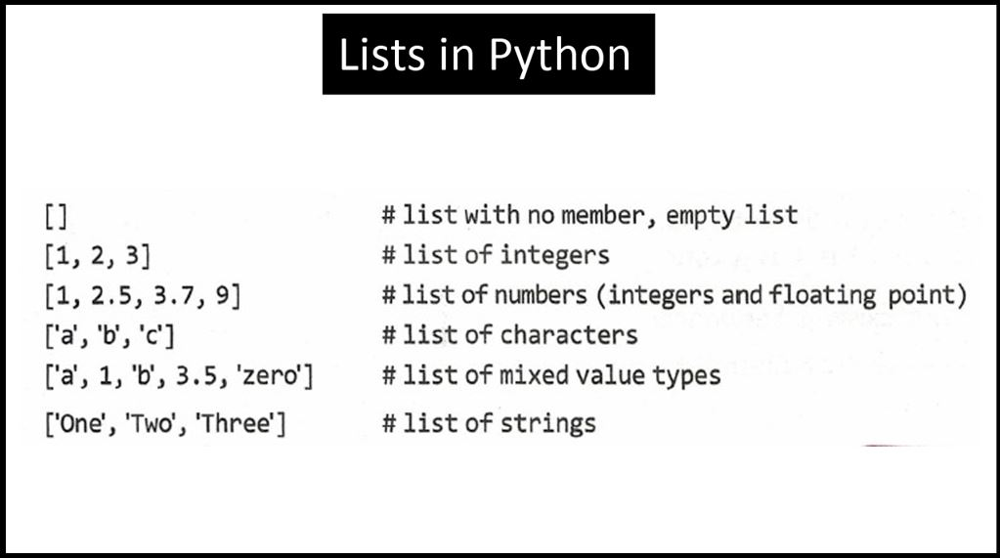
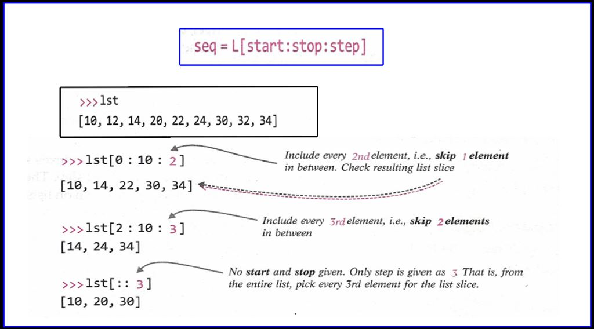

Lists:-
Python lists are containers used to store a list of values of any data type. In simple words, we can say that a list is a collection of elements from any data type E.g.
list1 = ['harry', 'ram', 'Aakash', 'shyam', 5, 4.85]
The above list contains strings, an integer, and even an element of type float. A list can contain any kind of data i.e. it’s not mandatory to form a list of only one data
type. The list can contain any kind of data in it.
List is a collection which is ordered and changeable. Allows duplicate members.
Remember we saw indexing in strings? List elements can also be accessed by using Indices i.e. first element of the list has 0 index and the second element has 1 as its index
and so on.
Note: If you put an index which isn’t in the list then you will get an error. i.e. if a list named list1 contains 4 elements, list1[4] will throw an error because the list
index starts from 0 to 3.
Have a look at the examples below:

List Methods:-
Here is the list of list methods in Python. These methods can be used in any python list to produce the desired output.
Program 1:-
# List Methods:
l1=[1,8,4,3,15,20,25,89,65] #l1 is a list
print(l1)
l1.sort() #l1 after sorting
print(l1)
l1.reverse() #l1 after reversing all elements
print(l1)
Program 2:-
# List Methods :-
list1=[1,2,3,6,5,4] # list1 is a list
list1.append(7) # This will add 7 in the last of list
list1.insert(3,8) # This will add 8 at 3rd index in list
list1.remove(1) # This will remove 1 from the list
list1.pop(2) # This will delete and return index 2 value.
List of List methods -
1. Append
2. Clear
3. Copy
4. Count
5. Extend
6. Index
7. Insert
8. Pop
9. Remove
10. Reverse
11. Sort
Click here for example of List methods
List Slicing:
List slices, like string slices, returns a part of a list extracted out of it. Let me explain, you can use indices to get elements and create list slices as per the following
format:
seq = list1[start:stop]
Just like we saw in strings, slicing will go from a start index to stop_index-1. It means the seq list which is a slice of list1 contains elements from the specified start
index to specified stop_index – 1.

Program:
grocery = ["Harpic", "vim bar", "deodrant", "Bhindi",
"Lollypop", 56]
# print(grocery[5])
numbers = [2, 7, 9, 11, 3]
# numbers.remove(9)
# numbers.pop()
# numbers.sort()
# numbers = []
# numbers.reverse()
# numbers.append(1)
# numbers.append(72)
# numbers.append(5)
# numbers.insert(2, 67)
# print(numbers)
# 3, 11, 9, 7, 2
# print(numbers)
# numbers[1] = 98
# print(numbers)
# Mutable - can change
# Immutable - cannot change
# tp = (1,)
# print(tp)
a= 1
b = 8
a, b = b,a
# temp = a
# a = b
# b = temp
print(a, b)